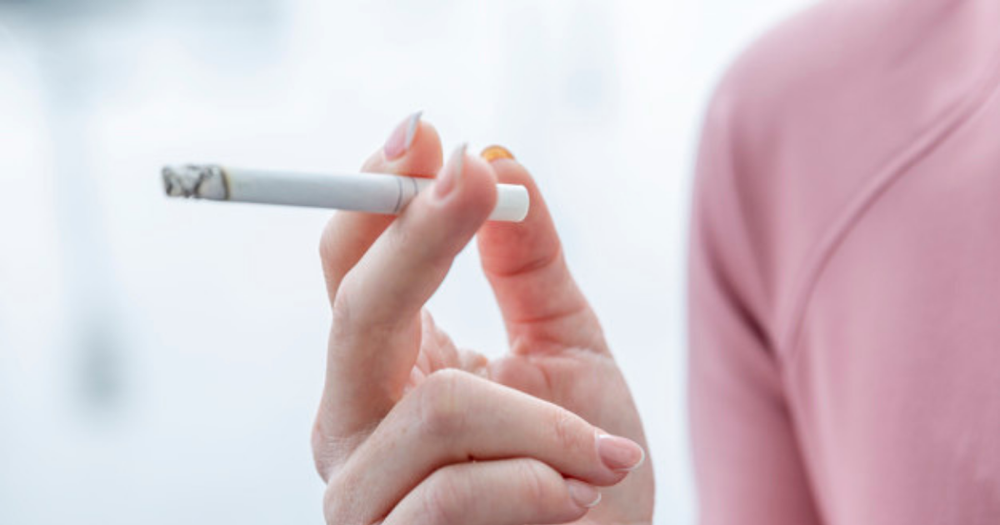

ကိုယ်ဝန်ဆောင်ချိန် ဆေးလိပ်ငွေ့အန ္တရာယ်မှ ရှောင်ရှားနည်း (၄) သွယ်

ဆေးလိပ်သောက်ခြင်းဟာ ကျန်းမာရေးကို ဆိုးရွားစွာထိခိုက်စေနိုင်ပါတယ်။ ထို့အတူ ဆေးလိပ ်မသောက်ပေမဲ့ ဆေးလိပ်ငွေ့ ရှူရှိုက်မိသူမှာလည်း တူညီတဲ့ ထိခိုက်မှုကို ခံစားရနိုင်ပါတယ်။ ဆေးလိပ်ငွေ့ကို များစွာ ရှူရှိုက်မိလေ ကျန်းမာရေးအတွက် အန ္တရာယ်ရှိလေ ဖြစ်ပါတယ်။
.
.
.
ဆေးလိပ်သောက်ခြင်းဟာ ကျန်းမာရေးကို ဆိုးရွားစွာထိခိုက်စေနိုင်ပါတယ်။ ထို့အတူ ဆေးလိပ ်မသောက်ပေမဲ့ ဆေးလိပ်ငွေ့ ရှူရှိုက်မိသူမှာလည်း တူညီတဲ့ ထိခိုက်မှုကို ခံစားရနိုင်ပါတယ်။ ဆေးလိပ်ငွေ့ကို များစွာ ရှူရှိုက်မိလေ ကျန်းမာရေးအတွက် အန ္တရာယ်ရှိလေ ဖြစ်ပါတယ်။
Secondhand Smoke ဆိုတာ ဆေးလိပ်သောက်နေတဲ့သူရှူထုတ်လိုက်တဲ့ ဆေးလိပ်ငွေ့တွေကို ရှူလိုက်မိသူကို ခေါ်ပါတယ်။ ဆေးလိပ်ငွေ့မှာ လူကိုအန ္တရာယ်ဖြစ်စေသည့် ရာပေါင်းများစွာသော ဓာတုဒြပ်ပေါင်းများစွာ ပါဝင်ပါတယ်။ ၎င်းတို့ထဲမှာမှ အမျိုးပေါင်း ၅၀ ကျော်လောက်က ကင်ဆာရောဂါကို ဖြစ်စေနိုင်ပါတယ်။
ဥပမာအနေနဲ့ပြောရရင် –
Benzene
Hydrogen cyanide
Carbon monoxide
Formaldehyde
Vinyl chloride
Ammonia စတဲ့ဒြပ်ပေါင်းများဟာ လူကို ထိခိုက်စေနိုင်ပါတယ်။
ကိုယ်ဝန်ဆောင်နှင့် ဆေးလိပ်ငွေ့အန ္တရာယ်
ကိုယ်ဝန်ဆောင်မိခင်တွေအနေနဲ့ ဆေးလိပ်သောက်ရင် သို့မဟုတ် ဆေးလိပ်ငွေ့ကို ရှူရှိုက်မိရင် သန္ဓေသားကို ထိခိုက်စေနိုင်ပါတယ်။
ကလေးအသေမွေးခြင်း
ကိုယ်လက်အင်္ဂါ မပြည့်စုံသော ကလေးငယ်မွေးဖွားခြင်း
ကလေးငယ်တွင် ပန်းနာရင်ကြပ်ရောဂါဖြစ်နိုင်ချေ များခြင်း
ကလေးငယ်တွင် နှင်းခူရောဂါ၊ ဓာတ်မတည့်သောရောဂါများ ဖြစ်ပွားနိုင်ပါတယ်။
မွေးကင်းစကလေးနှင့် ငယ်ရွယ်သောကလေးငယ်များအပေါ် ဆေးလိပ်ငွေ့အန ္တရာယ်သက်ရောက်မှု
လူကြီးမိဘများအနေနဲ့ မိမိတု့ိရဲ့ကလေးငယ်ဘေးမှာ ဆေးလိပ်သောက်ခြင်းဟာ သူတို့လေးတွေရဲ့ အပြစ်ကင်းစင်တဲ့ဘဝကို ဖျက်ဆီးရာရောက်မှာဖြစ်ပါတယ်။
၁။ မွေးကင်းစကလေးငယ်တွေရဲ့ အဆုတ်နဲ့ ခန္ဓာကိုယ်က အလွန်နုနယ်တာကြောင့် ဆေးလိပ်ငွေ့ကို ရှူရှိုက်မိပါက ဆေးလိပ်ငွေ့ အန ္တရာယ်ကို အလွယ်တကူ ခံစားရနိုင်ပါတယ်။
အဆုတ်ကို ထိခိုက်နိုင်တဲ့ ရောဂါတွေကတော့-
အဆုတ်၏ လုပ်ငန်းဆောင်တာများကျဆင်းခြင်း
ပန်းနာရင်ကြပ်ရောဂါ ဖြစ်ပွားမှုမြင့်မားခြင်း
အဆုတ်ရောင်နှင့် လေပြွန်ရောင်ရောဂါများ ဖြစ်ပွားနိုင်ခြင်း
ကလေးငယ်ရုတ်တရက်သေဆုံးခြင်း ( SIDS – Sudden Infant Death Syndrome)
ဒါ့အပြင် သင့်ကလေး အသက်ကြီးလာတဲ့အခါ ရေတိမ်၊ နှလုံးရောဂါနဲ့ ကင်ဆာရောဂါတွေ ဖြစ်နိုင်ချေ ပိုများပါတယ်။
ဆေးလိပ်ငွေ့ ရှူရှိုက်မိခြင်းမှ ကာကွယ်တားဆီးခြင်း
ဆေးလိပ်ငွေ့ အန ္တရာယ်ကို ရှောင်ရှားရန်အတွက် ဆေးလိပ်သောက်ခြင်းကို မလုပ်မိဖို့ လိုအပ်သလို ဆေးလိပ်သောက်သူ အနီးကို မသွားဖို့လည်း လိုအပ်ပါတယ်။ သင်ကိုယ်တိုင်သာမက သင့်ပတ်ဝန်းကျင်ကိုပါ ဆေးလိပ်ငွေ့ကင်းစင်အောင် လုပ်ဆောင်သင့်ပါတယ်။
၁။ သင်နေထိုင်ရာပတ်ဝန်းကျင်အား ဆေးလိပ်ငွေ့ကင်းစင်စေခြင်း
ဆးလိပ်ငွေ့ကင်းစင်တဲ့ နေရာတွေမှာသာ နေပါ။ ကိုယ့်ကိုယ်ကို ဆေးလိပ် မသောက်မိအောင်နေပါ။ အထူးသဖြင့် အိမ်နဲ့ကားထဲမှာ မသောက်မိအောင် နေပါ။
၂။ ဆေးလိပ်သောက်ခြင်းကို အားမပေးပါနှင့်
သင့် မိသားစုမှာ ဆေးလိပ်သောက်သုံးသူရှိပါက ဆေးလိပ်ဖြတ်အောင် တိုက်တွန်းပါ။ အိမ်မှာ ဆေးလိပ်မသောက်ပေမယ့်လည်း ဆေးလိပ်ငွေ့မှာ ပါဝင်တဲ့ ဓာတုပစ္စည်းတွေဟာ အဝတ်အစားနဲ့ အသုံးအဆောင်တွေမှာ စွဲကပ်နေတတ်ပါတယ်။
၃။ ဆေးလိပ်သောက်ခွင့်မပြုသော နေရာများတွင်သာ နေပါ
ဆေးလိပ်သောက်တာကို တားမြစ်ထားတဲ့ နေရာတွေကိုစာ ဈေးဝယ်ထွက်ပါ။ လည်ပတ်ပါ၊ ညစာစားပါ။
၄။ ကလေးငယ်များကို ဆေးလိပ်နဲ့ကင်းကွာအောင် ပြုစုပျိုးထောင်ပါ
ကလေးငယ်တွေကို ဆေးလိပ်သောက်သူတွေနဲ့ ဝေးဝေးနေတတ်အောင် သင်ကြားပေးပါ။ ဆေးလိပ်ရဲ့ဆိုးကျိုးတွေကိုလည်း ပြောပြထားပေးပါ။
Source-Paing